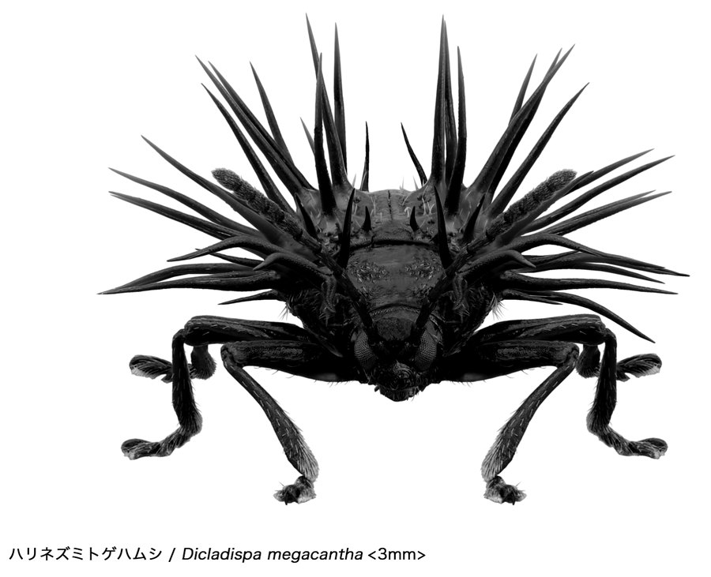

虫展、豊田で開幕
「養老孟司と小檜山賢二の虫展」が、七月十一日、愛知・豊田市博物館で開幕する。前日の十日には内覧会が開かれ、十一日からいよいよ一般公開。会期は九月二十三日（水・祝）まで。東京・恵比寿の東京都写真美術館で約三万人を集めた展示が、今度は愛知県豊田市へ。
会場の主役は、養老の珠玉の言葉と、小檜山が独自技法で撮った虫の超拡大「マイクロプレゼンス」写真。数ミリの虫を数百倍にし、全身のすみずみまでくっきりとピントを合わせた一枚だ。睨むような眼、宝石のような翅、とげだらけの脚。一体の虫が、まるで未知の生きもののように、堂々と立ち上がる。その前で、東京では子どもも年配の方も足を止め、豊田では、写真のまさにその現物の標本を、各写真の前に置いている。それだけでここまで変わるとは、と養老自身も驚いたそうだ。
豊田では、新しいコーナーが加わる。子どもが、虫を見て、絵に描くコーナーだ。〈じっと見る。よーく見る。その後に、見たものを絵に描いてみる。描く自分には、何が起きているだろう？〉。会場に掲げられたこの問いかけが、いい。手を動かすうちに、さっきまで気づかなかった脚の節や、翅の模様が見えてくる。見ることは、いつのまにか、描くことになる。描こうとして初めて、ほんとうに見えてくるものがある。見ている自分も、いつのまにか少し変わっている。
「答えはぜんぶ、虫にある。ありのままを見ればいいんです。木の枝の葉っぱをよく見てください。あの葉っぱ一枚が、すべての答えでしょう。虫だってそう。もう、答えはそこにある。自然からの答えは、もう目の前にあるのです」。はこのあと、岡山、そして九州・東海地方へと巡回し、再来年以降も開催の依頼が続く。
豊田でうれしい、虫展２つの秘密を教えます
養老先生の名前のついた虫がいる？ さて、そのココロは？
採集したのは養老先生。でも自分の専門ではないということで、それを仲間にわたしたところ、その虫屋さんが論文記載。その学名に「yoroi」とついているのです！
ゲームコントローラーで3Dの虫を動かせて遊べる！
大分県立美術館の虫展にいらした方はご存じ、長蛇の列ができた人気のコーナーが、バージョンアップして復活します。
子どもが、絵を描く
── 豊田の新コーナー

ハリネズミトゲハムシ ／ Dicladispa megacantha <3mm> © Kenji Kohiyama
豊田会場では、子どもが虫の絵を描けるコーナーが新しく加わる。手順は、たった三つ。じっと見る。よーく見る。そして、見たものを、絵のかたちにしてみる。うまく描けなくていい。
脚は何本だったか、翅はどんな形だったか――描こうとした瞬間、人は「見ていたつもり」だったことに気づく。鉛筆が止まる。もう一度、虫を見る。その往復のなかで、目は驚くほど細かくなっていく。描いている自分には、何が起きているだろう？ 養老先生の言う「みて、かんじて、かんがえる」が、そのまま起きている。親も、隣で一緒に描いてみるといい。同じ虫を見ているはずなのに、できあがる絵は、まるで違うはず。
そもそも、虫展とは何か。
はじめて本紙を手にする方のために、毎号記しておく。
本展は、解剖学者・養老孟司と写真家・小檜山賢二による二人展である。両者は四十年来の虫友達だ。会場の主役は、養老の珠玉の言葉と小檜山の超拡大「マイクロプレゼンス写真」だ。一体の虫を何十枚も撮り、ピントの合った部分を継ぎ合わせる「深度合成」で、肉眼ではありえない一枚が生まれる。数ミリの虫が、数百倍の大きさで立ち上がる。養老が「ものを見る」意味を語り、小檜山がそれを一枚の写真で見せる。本展は2024年に大分で先行し約三万人、2026年春に東京都写真美術館で約二万人を集めた。
今日は何の日 ── 7月11日
7月11日は「世界人口デー」。地球に暮らす人は、およそ80億。
いっぽう虫は、名前のついた種類だけで100万種を超え、個体数にいたっては誰にも数えられない。数でいえば、地球はとっくに「虫の星」である。いちばん近くの、いちばん遠い隣人。それが、虫なのかもしれない。
虫展｜豊田会場へ ── アクセスと特設
会期は7月11日(土)〜9月23日(水・祝)。会場は豊田市博物館（豊田市小坂本町5-80）。名鉄豊田市駅・愛環新豊田駅から徒歩圏。開館10:00〜17:30、月曜休館。観覧料は一般1,500円／高大生1,300円／中学生以下無料。最新情報やチケットは特設サイトへ。
会期中は、養老先生・小檜山さんによる関連トークを予定（詳細は特設サイト）。